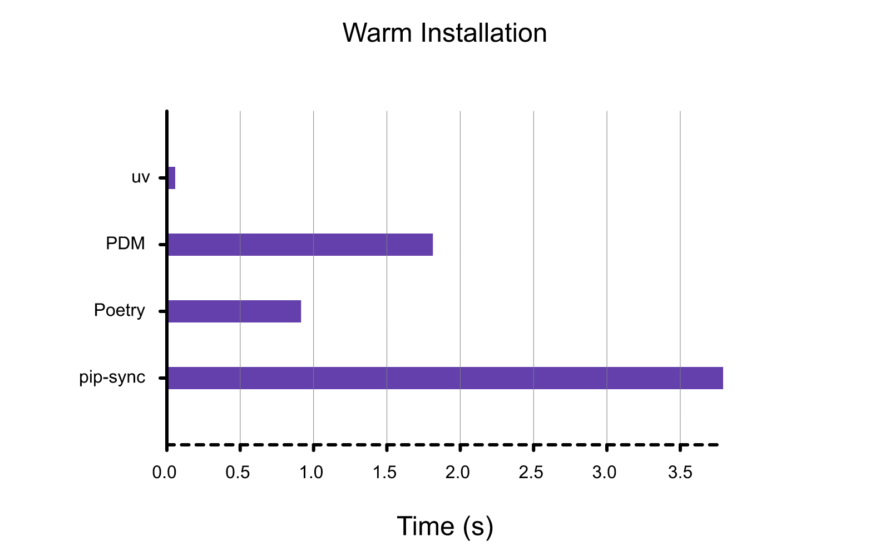
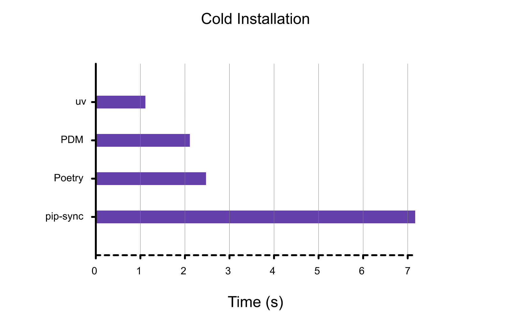
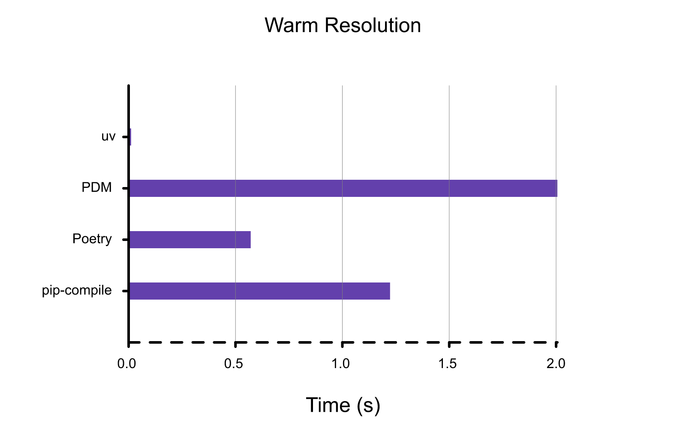
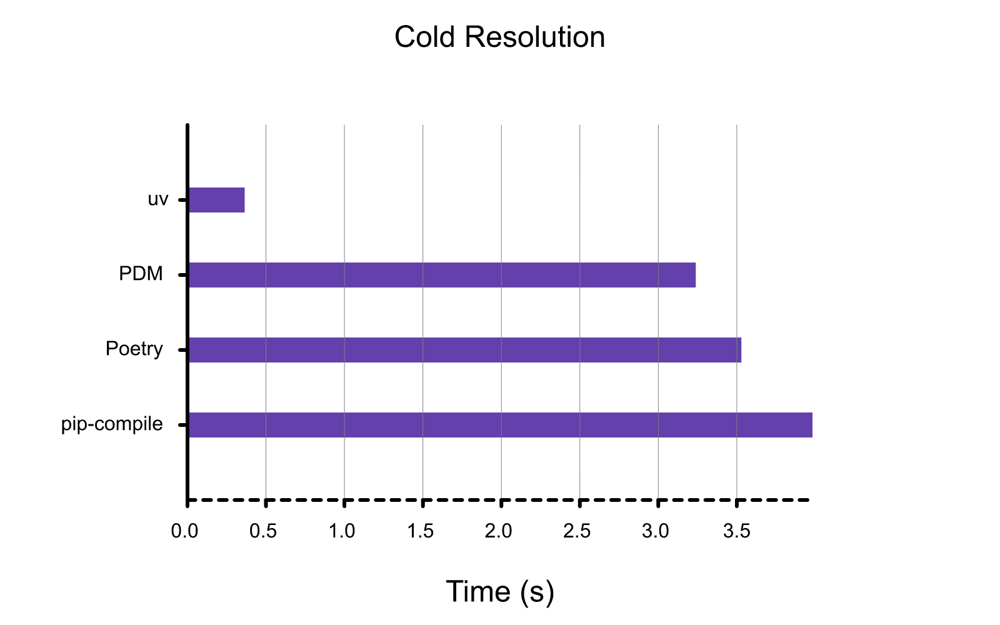
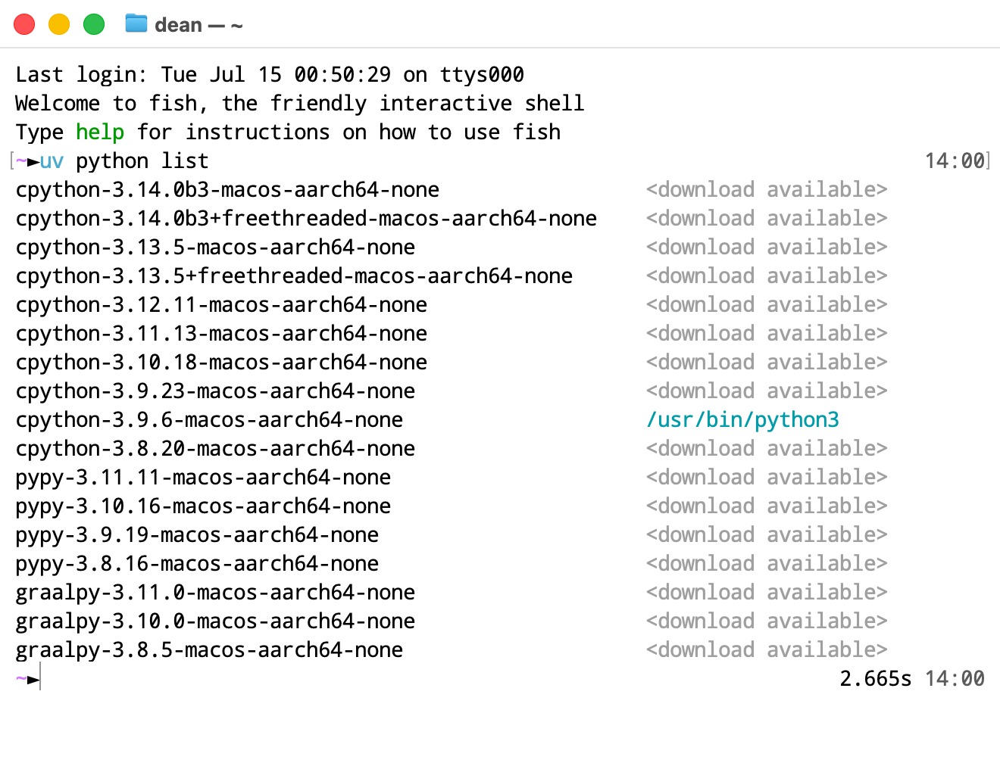

uv：新一代 Python 虚拟环境管理工具
以下内容整理自 uv 中文文档。
uv 是什么
An extremely fast Python package and project manager, written in Rust.
uv 是由 Astral 团队开发的一款超高速 Python 包管理器，旨在替代传统的 pip 和 virtualenv。它聚焦于三个关键点：性能、安全性、以及现代化开发流程的兼容性。
为什么要使用 uv
性能
Benchmark
仓库地址：https://github.com/astral-sh/uv/blob/main/BENCHMARKS.md
- 使用热缓存对软件包安装（例如
uv sync）进行基准测试：删除并重新创建虚拟环境，并使用同一台机器上安装的依赖项填充该环境。

- 使用冷缓存对软件包安装（例如
uv sync）进行基准测试：运行uv sync在新机器上或在 CI 中（假设包管理器缓存未在运行之间共享）。

- 使用热缓存（但没有现有的 lockfile）对依赖项解析（例如
uv lock）进行基准测试：清除现有的requirements.txt文件，从requirements.in文件重新生成。

- 使用冷缓存对依赖项解析（例如，
uv lock）进行基准测试：在新机器上或在 CI 中运行uv lock（假设包管理器缓存在运行之间不共享）。

存储空间
依赖缓存
uv 采用主动缓存策略，避免重新下载（和重新构建）之前运行中已访问过的依赖项。该缓存在硬盘中是全局的，可节省硬盘空间。（因此，需要保持 uv 安装路径与项目文件所在硬盘一致）
动态元数据
默认情况下，只有当目录根目录中的 pyproject.toml、setup.py 或 setup.cfg 文件发生更改，或者添加或删除了 src 目录时，uv 才会重新构建并重新安装本地目录依赖项（例如，可编辑的依赖项）。这是一种启发式方法，在某些情况下，重新安装的次数可能比预期的少。
和 conda 的对比
| 对比项 | uv | conda |
|---|---|---|
| 语言支持 | 专注 Python | 跨语言 (Python, R, C++ 等) |
| 包源 | PyPI | Conda Channels |
| 虚拟环境 | 内置，venv 兼容 |
独立，语言隔离 |
| 安装速度 | 极快（Rust，并行，缓存） | 较慢 (依赖解析复杂) |
| 磁盘占用 | 低（全局共享缓存） | 高（环境相对独立） |
| 适用场景 | 通用 Python 开发，CI/CD | 数据科学，复杂二进制依赖 |
uv 的使用
太长不看
- 创建项目：
uv init - 安装包到环境：
uv add <package> - 从环境卸载包：
uv remove <package> - 同步环境：
uv sync - 以当前环境运行文件：
uv run xxx.py - 清理未使用缓存：
uv cache prune
项目结构
一个项目由几个重要部分组成，它们协同工作，使 uv 能够管理你的项目。 除了 uv init 创建的文件外，在你首次运行项目命令（如 uv run、uv sync 或 uv lock）时，uv 还会在项目根目录中创建一个虚拟环境和 uv.lock 文件。
完整的文件列表如下：
1 | . |
pyproject.toml
pyproject.toml 是 Python 项目元数据的标准化文件。它取代了 requirements.in 等文件，可描述项目的依赖包组。它还为有关项目的元数据提供了一个集中位置，例如构建或工具设置。
TOML 旨在成为一个语义显著且易于阅读的极简配置文件格式，能够无歧义地转化为哈希表，且能够简单解析成编程语言中形形色色的数据结构，用于取代 YAML 和 JSON。
1 | [project] |
我们可以这样说：存在 pyproject.toml 文件的文件夹可以被看作是一个 Python 项目。
uv.lock
UV 使用 LockFile （uv.lock） 文件来锁定包版本。此文件格式为 uv 特有，并让 uv 支持高级功能。它取代了 requirements.txt 文件。
添加依赖项时，将自动创建并填充 lockfile，我们也可以使用 uv lock 显式创建它。
与 requirements.txt 文件不同，uv.lock 文件可以表示任意依赖项组，因此不需要多个文件来锁定开发依赖项。这可确保所有开发人员都使用一致的、锁定的依赖项版本。
.python-version
.python-version 文件包含项目的默认 Python 版本。此文件告诉 uv 在创建项目的虚拟环境时应使用哪个 Python 版本。
.venv
.venv 文件夹包含项目的虚拟环境，这是一个与系统其他部分隔离的 Python 环境。uv 将在此处安装项目的依赖项。
安装
使用各系统包管理器直接安装即可（winget / brew / apt / pacman 等）。
配置
安装 Python
如果系统中已安装 Python，uv 会自动检测并使用，无需额外配置。不过，uv 也能够安装和管理 Python 版本。uv 会根据需要自动安装缺失的 Python 版本，因此你无需预先安装 Python 即可上手。
-
查看已安装 / 可下载的 Python 版本：
uv python list
-
安装指定 Python 版本：
uv python install <version> -
在当前环境使用指定 Python 版本：
uv python pin <version>-
如果想指定系统中已存在的 Python，可直接输入路径。例如对于 Python 自带的
socket库，在 Linux 平台原生编译有对蓝牙 RFCOMM 协议的支持，但使用 uv 安装时，由于兼容性可能导致安装的 Python 并不支持该协议。我们可以使用例如uv python pin $(which python)这样的命令来指定到本地安装的 Python 环境。 -
如果想取消版本的指定（unpin），删除项目文件夹中的
.python-version文件。
-
-
更新指定 Python 版本：
uv python update <version>
清除缓存
- 从缓存目录中删除所有缓存条目，将其完全清空：
uv cache clean- 请注意，在其他 uv 命令运行时修改 uv 缓存（例如
uv cache clean）是不安全的，并且直接修改缓存（例如通过删除文件或目录）永远不安全。 - 删除某个包的所有缓存条目：
uv cache clean <package>
- 请注意，在其他 uv 命令运行时修改 uv 缓存（例如
- 删除所有未使用的缓存条目：
uv cache prune
启用 Shell 自动补全
-
uv命令- Bash：
echo 'eval "$(uv generate-shell-completion bash)"' >> ~/.bashrc - Zsh：
echo 'eval "$(uv generate-shell-completion zsh)"' >> ~/.zshrc - Fish：
echo 'uv generate-shell-completion fish | source' > ~/.config/fish/completions/uv.fish - Elvish：
echo 'eval (uv generate-shell-completion elvish | slurp)' >> ~/.elvish/rc.elv - PowerShell / pwsh：
1
2
3
4if (!(Test-Path -Path $PROFILE)) {
New-Item -ItemType File -Path $PROFILE -Force
}
Add-Content -Path $PROFILE -Value '(& uv generate-shell-completion powershell) | Out-String | Invoke-Expression'
- Bash：
-
uvx命令uv改为uvxgenerate-shell-completion改为--generate-shell-completion
运行脚本
- 运行无依赖项 / 仅依赖 Standard 库的脚本：
uv run xxx.py- 如果脚本在项目中（即存在
pyproject.toml文件），需要添加额外参数以避免脚本依赖项目：uv run --no-project xxx.py
- 如果脚本在项目中（即存在
- 运行有依赖项的脚本：
uv run --with <dependency> xxx.py-
<dependency>项可以是依赖包名，也可以是对依赖包版本的约束，如'rich>12,<13'等。
-
使用工具
工具是提供命令行界面的 Python 软件包。
- 不安装并运行工具：
uvx <tool>- 使用
uvx时，工具会安装到临时的隔离环境中。 - 指定 Python 版本：
uvx --python <version> <tool>
- 使用
- 安装工具：
uv tool install <tool> - 升级工具：
uv tool upgrade <tool>- 升级所有工具：
uv tool upgrade --all
- 升级所有工具：
uvx
uv 包含一个用于与工具交互的专用接口。可以使用 uv tool run 无需安装即可调用工具，在这种情况下，其依赖项将安装在与当前项目隔离的临时虚拟环境中。由于经常会在不安装工具的情况下运行工具，因此为 uv tool run 提供了 uvx 别名，这两个命令完全等效。
也可以使用 uv tool install 安装工具，在这种情况下，其可执行文件将在 PATH 中可用，此时仍会使用隔离的虚拟环境，但命令完成后不会将其删除。
管理项目
管理依赖包
-
在当前目录新建项目：
uv init- uv 将创建以下文件：
1
2
3
4
5.
├── .python-version
├── README.md
├── main.py
└── pyproject.toml
- uv 将创建以下文件：
-
在当前目录下的指定文件夹新建项目：
uv init <project_name> -
添加依赖包到当前环境：
uv add <package>-
<package>项可以是依赖包名，也可以是对依赖包版本的约束，如'rich>12,<13'等。
-
-
在当前环境移除依赖包：
uv remove <package> -
升级包：
uv lock --upgrade-package <package> -
更新环境与
pyproject.toml一致：uv sync
运行命令
- 在当前环境运行命令：
uv run <command>- 在每次调用
uv run之前，uv 会验证锁定文件是否与pyproject.toml保持最新，并且环境是否与锁定文件保持最新，从而无需手动干预即可使项目保持同步。uv run确保你的命令在一致的锁定环境中运行。 <command>项可以是脚本命令，也可以是某个待执行的 Python 文件。
- 在每次调用
手动管理环境和包：pip 接口
- 在当前环境创建
.venv虚拟环境：uv venv- 创建时指定 Python 版本：
uv venv --python <version>
- 创建时指定 Python 版本：
- 在虚拟环境中安装包：
uv pip install <package> - 激活虚拟环境
- Linux / macOS：
source .venv/bin/activate - Windows：
.venv\Scripts\activate - Unix 系统上的默认激活脚本适用于符合 POSIX 标准的 shell，如
sh、bash或zsh。对于常见的其他 shell，也有额外的激活脚本：source .venv/bin/activate.fishsource .venv/bin/activate.cshuse .venv\Scripts\activate.nu
- Linux / macOS：
- 退出当前激活的虚拟环境：
deactivate - 列出当前环境所有包：
uv pip list
发布 Package
构建系统
构建系统决定了项目应如何打包和安装。项目可以在 pyproject.toml 的 [build-system] 表中声明并配置构建系统。
uv 通过判断是否存在构建系统，来确定项目是否包含应安装在项目虚拟环境中的包。如果未定义构建系统，uv 将不会尝试构建或安装项目本身，仅安装其依赖项。如果定义了构建系统，uv 将构建项目并将其安装到项目环境中。
可以在 uv init 中使用 --build-backend 选项，来创建具有适当布局的打包项目。也可以在 uv init 中使用 --package 选项，来创建具有默认构建系统的打包项目。
构建包
- 构建项目：
uv builduv build将在当前目录中构建项目，并将构建产物放在dist/子目录中。
- 发布软件包：
uv publish- 通过
--token或UV_PUBLISH_TOKEN设置 PyPI 令牌，或者通过--username或UV_PUBLISH_USERNAME设置用户名，并通过--password或UV_PUBLISH_PASSWORD设置密码。如果要从 GitHub Actions 发布到 PyPI，则无需设置任何凭据。相反，将受信任的发布者添加到 PyPI 项目。
- 通过
- 测试软件包：
uv run --with <package> --no-project -- python -c "import <package>"
从 pip 迁移到 uv
这里指从使用 pip 和 pip-tools 工作流，以 requirements.txt 为核心的项目迁移到使用 uv，以 pyproject.toml 和 uv.lock 为核心的项目。
- 初始化项目：
uv init - 导入依赖包：
uv add -r requirements.in- 如果想导入
requirements.txt当中锁定版本的包，运行：uv add -r requirements.in -c requirements.txt
- 如果想导入
- 使用 uv 的方式管理项目